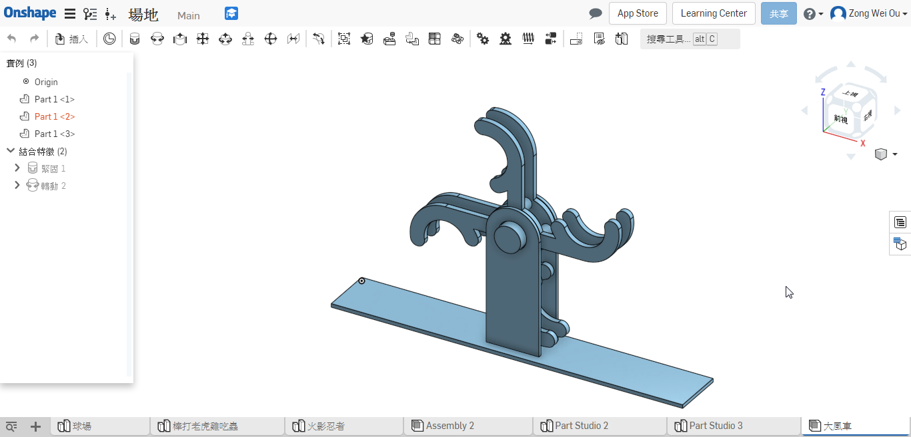
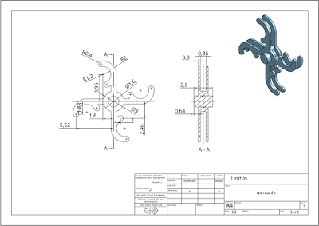
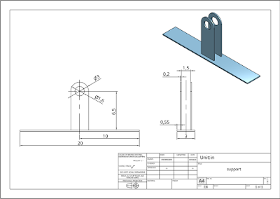
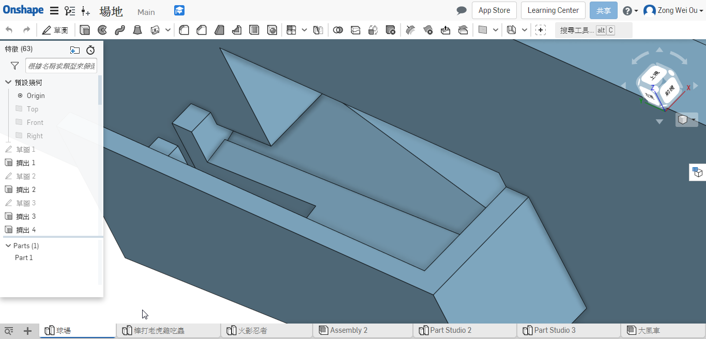
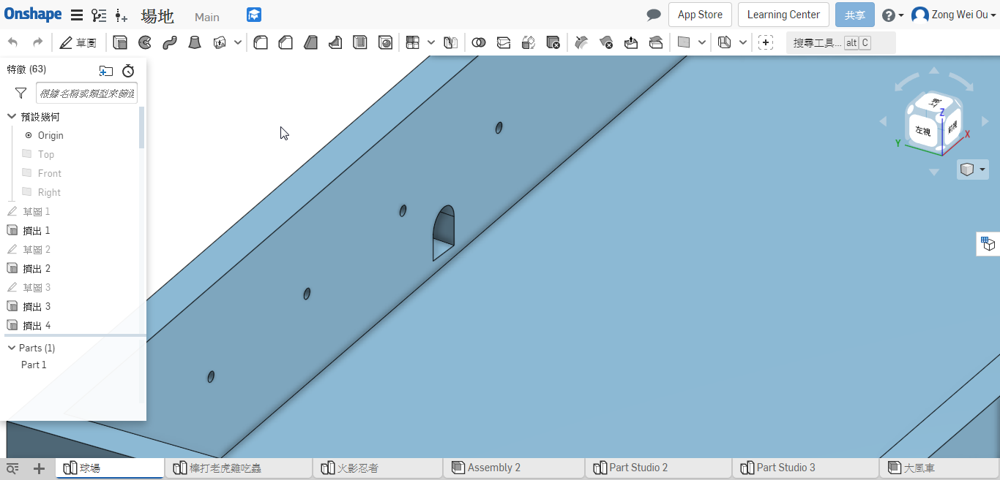
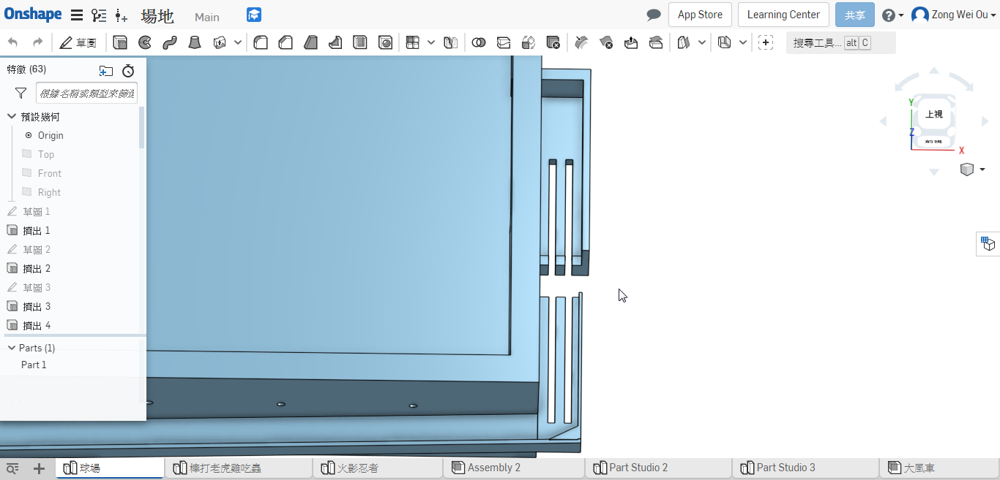
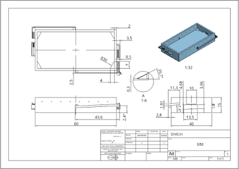

Week 12-13
後來我又設計一個類似像風車的送球機構，因為這一個所佔的體積比較小，不會像當初設計的連桿機構佔很大的比例，爪子的部分是為了能夠把球給抓起來送到軌道中，繪製爪子的時候，必須確保球不會到一個角度而掉出去，能夠依照預期的方向前進。



球門是設計成一個斜角，因為球進球門以後，到特定地點等著送球機構運輸球進入軌道當中；軌道是設計斜面，利用重力讓球自己帶動回到中場。



出球孔設計比場地平面高，因為這樣踢球的時候，球運行的軌道不會因為這一個出球孔而打亂了。

軌道與球門中有縫隙是為了配合送球機構的組裝；轉角處的有一個三角形擋板，設計拿個是因為我們進行模擬的時候，球有時候卡在轉彎處，為了確定他會繼續進行，就加一個擋板在那裡，這樣就能夠順利繼續前進。


模擬影片
Week 11-12 << Previous Next >> Week 14-15